Very high yield and excellent fruits quality!
Resistance:
HR: ToMV:0-2; Fol:1,2; Vd; Va
IR: TYLCV
Plant:
Strong vigor that provides good leaf coverage.
Very high productivity with good fruit setting.
Early maturity variety.
Fruit:
Long shelf life on plant and post harvest.
Nice shiny attractive deep red color.
Average fruit size: 140 – 160 grams.